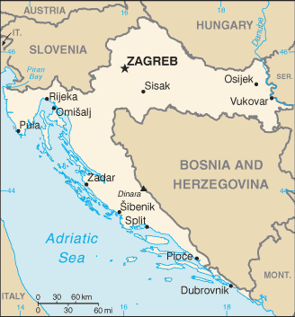
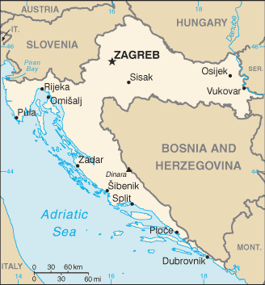

Europe :: CROATIA
Introduction :: CROATIA
-
The lands that today comprise Croatia were part of the Austro-Hungarian Empire until the close of World War I. In 1918, the Croats, Serbs, and Slovenes formed a kingdom known after 1929 as Yugoslavia. Following World War II, Yugoslavia became a federal independent communist state under the strong hand of Marshal TITO. Although Croatia declared its independence from Yugoslavia in 1991, it took four years of sporadic, but often bitter, fighting before occupying Serb armies were mostly cleared from Croatian lands, along with a majority of Croatia's ethnic Serb population. Under UN supervision, the last Serb-held enclave in eastern Slavonia was returned to Croatia in 1998. The country joined NATO in April 2009 and the EU in July 2013.
Geography :: CROATIA
-
Southeastern Europe, bordering the Adriatic Sea, between Bosnia and Herzegovina and Slovenia45 10 N, 15 30 EEuropetotal: 56,594 sq kmland: 55,974 sq kmwater: 620 sq kmcountry comparison to the world: 128slightly smaller than West Virginiatotal: 2,237 kmborder countries (5): Bosnia and Herzegovina 956 km, Hungary 348 km, Montenegro 19 km, Serbia 314 km, Slovenia 600 km5,835 km (mainland 1,777 km, islands 4,058 km)territorial sea: 12 nmcontinental shelf: 200-m depth or to the depth of exploitationMediterranean and continental; continental climate predominant with hot summers and cold winters; mild winters, dry summers along coastgeographically diverse; flat plains along Hungarian border, low mountains and highlands near Adriatic coastline and islandsmean elevation: 331 melevation extremes: lowest point: Adriatic Sea 0 mhighest point: Dinara 1,831 moil, some coal, bauxite, low-grade iron ore, calcium, gypsum, natural asphalt, silica, mica, clays, salt, hydropoweragricultural land: 23.7%arable land 16%; permanent crops 1.5%; permanent pasture 6.2%forest: 34.4%other: 41.9% (2011 est.)240 sq km (2012)more of the population lives in the northern half of the country, with approximately a quarter of the populace residing in and around the capital of Zagreb; many of the islands are sparsely populateddestructive earthquakesair pollution improving but still a concern in urban settings and in emissions arriving from neighboring countries; surface water pollution in the Danube River Basinparty to: Air Pollution, Air Pollution-Nitrogen Oxides, Air Pollution-Persistent Organic Pollutants, Air Pollution-Sulfur 94, Air Pollution-Volatile Organic Compounds, Biodiversity, Climate Change, Climate Change-Kyoto Protocol, Desertification, Endangered Species, Hazardous Wastes, Law of the Sea, Marine Dumping, Ozone Layer Protection, Ship Pollution, Wetlands, Whalingsigned, but not ratified: none of the selected agreementscontrols most land routes from Western Europe to Aegean Sea and Turkish Straits; most Adriatic Sea islands lie off the coast of Croatia - some 1,200 islands, islets, ridges, and rocks
People and Society :: CROATIA
-
4,292,095 (July 2017 est.)country comparison to the world: 127noun: Croat(s), Croatian(s)adjective: CroatianCroat 90.4%, Serb 4.4%, other 4.4% (including Bosniak, Hungarian, Slovene, Czech, and Romani), unspecified 0.8% (2011 est.)Croatian (official) 95.6%, Serbian 1.2%, other 3% (including Hungarian, Czech, Slovak, and Albanian), unspecified 0.2% (2011 est.)Roman Catholic 86.3%, Orthodox 4.4%, Muslim 1.5%, other 1.5%, unspecified 2.5%, not religious or atheist 3.8% (2011 est.)0-14 years: 14.21% (male 314,287/female 295,520)15-24 years: 11.24% (male 247,394/female 235,166)25-54 years: 40.43% (male 867,978/female 867,125)55-64 years: 14.82% (male 309,794/female 326,102)65 years and over: 19.31% (male 330,406/female 498,323) (2017 est.)total dependency ratio: 50.9youth dependency ratio: 22.4elderly dependency ratio: 28.5potential support ratio: 3.5 (2015 est.)total: 43 yearsmale: 41.1 yearsfemale: 45 years (2017 est.)country comparison to the world: 20-0.5% (2017 est.)country comparison to the world: 2248.9 births/1,000 population (2017 est.)country comparison to the world: 21012.2 deaths/1,000 population (2017 est.)country comparison to the world: 21-1.7 migrant(s)/1,000 population (2017 est.)country comparison to the world: 152more of the population lives in the northern half of the country, with approximately a quarter of the populace residing in and around the capital of Zagreb; many of the islands are sparsely populatedurban population: 59.6% of total population (2017)rate of urbanization: 0.22% annual rate of change (2015-20 est.)ZAGREB (capital) 687,000 (2015)at birth: 1.06 male(s)/female0-14 years: 1.06 male(s)/female15-24 years: 1.05 male(s)/female25-54 years: 1 male(s)/female55-64 years: 0.96 male(s)/female65 years and over: 0.69 male(s)/femaletotal population: 0.93 male(s)/female (2016 est.)28 years (2014 est.)8 deaths/100,000 live births (2015 est.)country comparison to the world: 158total: 9.3 deaths/1,000 live birthsmale: 9 deaths/1,000 live birthsfemale: 9.6 deaths/1,000 live births (2017 est.)country comparison to the world: 145total population: 76.1 yearsmale: 72.9 yearsfemale: 79.4 years (2017 est.)country comparison to the world: 891.4 children born/woman (2017 est.)country comparison to the world: 2117.8% of GDP (2014)country comparison to the world: 583.13 physicians/1,000 population (2014)5.9 beds/1,000 population (2014)improved:urban: 99.6% of populationrural: 99.7% of populationtotal: 99.6% of populationunimproved:urban: 0.4% of populationrural: 0.3% of populationtotal: 0.4% of population (2015 est.)improved:urban: 97.8% of populationrural: 95.8% of populationtotal: 97% of populationunimproved:urban: 2.2% of populationrural: 4.2% of populationtotal: 3% of population (2015 est.)<.1% (2016 est.)1,500 (2016 est.)country comparison to the world: 119<100 (2016 est.)degree of risk: intermediatevectorborne diseases: tickborne encephalitis (2016)24.4% (2016)country comparison to the world: 594.6% of GDP (2013)country comparison to the world: 99definition: age 15 and over can read and writetotal population: 99.3%male: 99.7%female: 98.9% (2015 est.)total: 15 yearsmale: 15 yearsfemale: 16 years (2014)total: 43%male: 41.9%female: 44.5% (2015 est.)country comparison to the world: 9
Government :: CROATIA
-
conventional long form: Republic of Croatiaconventional short form: Croatialocal long form: Republika Hrvatskalocal short form: Hrvatskaformer: People's Republic of Croatia, Socialist Republic of Croatiaetymology: name derives from the Croats, a Slavic tribe who migrated to the Balkans in the 7th century A.D.parliamentary republicname: Zagrebgeographic coordinates: 45 48 N, 16 00 Etime difference: UTC+1 (6 hours ahead of Washington, DC, during Standard Time)daylight saving time: +1hr, begins last Sunday in March; ends last Sunday in October20 counties (zupanije, zupanija - singular) and 1 city* (grad - singular) with special county status; Bjelovarsko-Bilogorska(Bjelovar-Bilogora), Brodsko-Posavska (Brod-Posavina), Dubrovacko-Neretvanska (Dubrovnik-Neretva), Istarska (Istria), Karlovacka (Karlovac), Koprivnicko-Krizevacka (Koprivnica-Krizevci), Krapinsko-Zagorska (Krapina-Zagorje), Licko-Senjska (Lika-Senj), Medimurska (Medimurje), Osjecko-Baranjska (Osijek-Baranja), Pozesko-Slavonska (Pozega-Slavonia), Primorsko-Goranska (Primorje-Gorski Kotar), Sibensko-Kninska (Sibenik-Knin), Sisacko-Moslavacka (Sisak-Moslavina), Splitsko-Dalmatinska (Split-Dalmatia), Varazdinska (Varazdin), Viroviticko-Podravska (Virovitica-Podravina), Vukovarsko-Srijemska (Vukovar-Syrmia), Zadarska (Zadar), Zagreb*, Zagrebacka (Zagreb county)25 June 1991 (from Yugoslavia)Independence Day, 8 October (1991) and Statehood Day, 25 June (1991); note - 25 June 1991 was the day the Croatian parliament voted for independence; following a three-month moratorium to allow the European Community to solve the Yugoslav crisis peacefully, parliament adopted a decision on 8 October 1991 to sever constitutional relations with Yugoslaviahistory: several previous; latest adopted 22 December 1990amendments: proposed by at least one-fifth of the Assembly membership, by the president of the republic, by the Government of Croatia, or through petition by at least 10% of the total electorate; proceedings to amend require majority vote by the Assembly; passage requires two-thirds majority vote by the Assembly; passage by petition requires a majority vote in a referendum, and promulgation by the Assembly; amended several times, last in 2014 (2016)civil law system influenced by legal heritage of Austria-Hungary; note - Croatian law was fully harmonized with the European Community acquis as of the June 2010 completion of EU accession negotiationshas not submitted an ICJ jurisdiction declaration; accepts ICCt jurisdictioncitizenship by birth: nocitizenship by descent only: at least one parent must be a citizen of Croatiadual citizenship recognized: yesresidency requirement for naturalization: 5 years18 years of age, 16 if employed; universalchief of state: President Kolinda GRABAR-KITAROVIC (since 19 February 2015)head of government: Prime Minister Andrej PLENKOVIC (since 19 October 2016); Deputy Prime Ministers Damir KRSTICEVIC (since 19 October 2016), Martina DALIC (since 19 October 2016), Predrag STROMAR (since 9 June 2017), and Marija Pejcinovic BURIC (since 19 June 2017)cabinet: Council of Ministers named by the prime minister and approved by the Assemblyelections/appointments: president directly elected by absolute majority popular vote in 2 rounds if needed for a 5-year term (eligible for a second term); election last held on 28 December 2014 and 11 January 2015 (next to be held in 2019); the leader of the majority party or majority coalition usually appointed prime minister by the president and approved by the Assemblyelection results: Kolinda GRABAR-KITAROVIC elected president; percent of vote in the second round - Kolinda GRABAR-KITAROVIC (HDZ) 50.7%, Ivo JOSIPOVIC (Forward Croatia Progressive Alliance) 49.3%description: unicameral Assembly or Hrvatski Sabor (151 seats; 140 members in 10 multi-seat constituencies and 3 members in a single constituency for Croatian diaspora directly elected by proportional representation vote using the D'Hondt method with a 5% threshold; an additional 8 members elected from a nationwide constituency by simple majority by voters belonging to minorities recognized by Croatia; the Serb minority elects 3 Assembly members, the Hungarian and Italian minorities elect 1 each, the Czech and Slovak minorities elect 1 jointly, and all other minorities elect 2; all members serve 4-year termselections: last held on 11 September 2016 (next to be held by December 2020) - Assembly voted on 20 June 2016 to dissolve on 15 July 2016, resulting in snap electionselection results: percent of vote by party/coalition - NA; number of seats by party/coalition - HDZ coalition 61, People's Coalition 54, Most-NL 13, Only Option 8, minorities 8 (includes SDSS 3), other 7note: as of August 2017, seats by party - HDZ 55, SDP 37, MOST-NL 12, HNS 5, HSS 5, GLAS 4, IDS 3, SDSS 3, Human Blockade 3, HDS 2, PH 2, other 7, independent 13highest court(s): Supreme Court (consists of the court president and vice president, 25 civil department justices, and 16 criminal department justices)judge selection and term of office: president of Supreme Court nominated by president of Croatia and elected by Croatian Sabor for a 4-year term; other Supreme Court justices appointed by National Judicial Council; all judges serve until age 70subordinate courts: Administrative Court; county, municipal, and specialized courts; note - there is an 11-member Constitutional Court with jurisdiction limited to constitutional issues but is outside Croatia's judicial systemBloc of Pensioners Together or BUZ [Milivoj SPIKA]Bridge of Independent Lists or Most-NL [Bozo PETROV]Civic Liberal Alliance or GLAS [Ankar Mrak TARITAS]Croatian Christian Democratic Party or HDS [Goran DODIG]Croatian Democratic Congress of Slavonia and Baranja or HDSSB [Branimir GLAVAS]Croatian Democratic Union or HDZ [Andrej PLENKOVIC]Croatian Laborists - Labor Party or HL [David BREGOVAC]Croatian Party of Rights - dr. Ante Starcevic or HSP AS [Hrvoje NICE]Croatian Peasant Party or HSS [Kreso BELJAK]Croatian Pensioner Party or HSU [Silvano HRELJA]Croatian People's Party - Liberal Democrats or HNS [Ivan VRDOLJAK]Croatian Social Liberal Party or HSLS [Darinko KOSOR]Forward Croatia Progressive Alliance [Ivo JOSIPOVIC]Human Blockade ("Living Wall") [Ivan SINCIC]Independent Democratic Serb Party or SDSS [Milorad PUPOVAC]Istrian Democratic Assembly or IDS [Boris MILETIC]Let's Change Croatia or PH [Ivan LOVRINOVIC]Milan Bandic 365 - Party of Labor and Solidarity or BM365-SRS [Milan BANDIC]Movement for Successful Croatia or HRAST [Ladislav ILCIC]People's Party - Reformists Party [Radimir CACIC]Smart Party or PAMETNO [Marijana PULJAK]Social Democratic Party of Croatia or SDP [Davor BERNARDIC]human rights groupsAustralia Group, BIS, BSEC (observer), CD, CE, CEI, EAPC, EBRD, ECB, EMU, EU, FAO, G-11, IADB, IAEA, IBRD, ICAO, ICC (national committees), ICCt, ICRM, IDA, IFAD, IFC, IFRCS, IHO, ILO, IMF, IMO, IMSO, Interpol, IOC, IOM, IPU, ISO, ITSO, ITU, ITUC (NGOs), MIGA, MINURSO, NAM (observer), NATO, NSG, OAS (observer), OIF (observer), OPCW, OSCE, PCA, SELEC, UN, UNCTAD, UNESCO, UNFICYP, UNHCR, UNIDO, UNIFIL, UNMIL, UNMOGIP, UNWTO, UPU, WCO, WHO, WIPO, WMO, WTO, ZCchief of mission: Ambassador Pjer SIMUNOVIC (since 8 September 2017)chancery: 2343 Massachusetts Avenue NW, Washington, DC 20008telephone: [1] (202) 588-5899FAX: [1] (202) 588-8936consulate(s) general: Chicago, Los Angeles, New Yorkchief of mission: Ambassador Julieta Valls NOYES (since 5 October 2015)embassy: 2 Thomas Jefferson Street, 10010 Zagrebmailing address: use embassy street addresstelephone: [385] (1) 661-2200FAX: [385] (1) 661-2373three equal horizontal bands of red (top), white, and blue - the Pan-Slav colors - superimposed by the Croatian coat of arms; the coat of arms consists of one main shield (a checkerboard of 13 red and 12 silver (white) fields) surmounted by five smaller shields that form a crown over the main shield; the five small shields represent five historic regions (from left to right): Croatia, Dubrovnik, Dalmatia, Istria, and Slavonianote: the Pan-Slav colors were inspired by the 19th-century flag of Russiared-white checkerboard; national colors: red, white, bluename: "Lijepa nasa domovino" (Our Beautiful Homeland)lyrics/music: Antun MIHANOVIC/Josip RUNJANINnote: adopted 1972; "Lijepa nasa domovino," whose lyrics were written in 1835, served as an unofficial anthem beginning in 1891
Economy :: CROATIA
-
Though still one of the wealthiest of the former Yugoslav republics, Croatia's economy suffered badly during the 1991-95 war. The country's output during that time collapsed, and Croatia missed the early waves of investment in Central and Eastern Europe that followed the fall of the Berlin Wall. Between 2000 and 2007, however, Croatia's economic fortunes began to improve with moderate but steady GDP growth between 4% and 6%, led by a rebound in tourism and credit-driven consumer spending. Inflation over the same period remained tame and the currency, the kuna, stable.Croatia experienced an abrupt slowdown in the economy in 2008 and is slowly recovering; economic growth was stagnant or negative in each year since 2009, but picked up in 2015-16. Difficult problems still remain including a stubbornly high unemployment rate, uneven regional development, and a challenging investment climate. In 2016 Croatia demonstrated a commitment to improving the business climate, simplifying its tax code to stimulate growth from domestic consumption and foreign investment. Even before 2016, Croatia has worked to become a regional energy player and plans to import liquefied natural gas through a prospective import terminal and re-export it to European consumers.On 1 July 2013, Croatia joined the EU, following a decade-long application process. Croatia will be a member of the European Exchange Rate Mechanism, with its currency effectively pegged to the euro, until it meets the criteria for joining the Economic and Monetary Union and adopts the euro as its currency. EU accession has increased pressure on the government to reduce Croatia’s relatively high public debt, which triggered the EU’s excessive deficit procedure for fiscal consolidation. Zagreb has cut spending since 2012, and the government also raised additional revenues through more stringent tax collection and by raising the value-added tax. The government has also sought to accelerate privatization of non-strategic assets, with mixed success.$95.65 billion (2016 est.)$91.71 billion (2015 est.)$88.74 billion (2014 est.)note: data are in 2016 dollarscountry comparison to the world: 85$50.73 billion (2016 est.)3% (2016 est.)2.2% (2015 est.)-0.5% (2014 est.)country comparison to the world: 100$22,900 (2016 est.)$22,100 (2015 est.)$21,400 (2014 est.)note: data are in 2016 dollarscountry comparison to the world: 8222.4% of GDP (2016 est.)24.6% of GDP (2015 est.)20.7% of GDP (2014 est.)country comparison to the world: 72household consumption: 57.9%government consumption: 19.2%investment in fixed capital: 20.1%investment in inventories: -0.3%exports of goods and services: 49.7%imports of goods and services: -46.6% (2016 est.)agriculture: 4.1%industry: 26.5%services: 69.4% (2016 est.)arable crops (wheat, corn, barley, sugar beet, sunflower, rapeseed, alfalfa, clover); vegetables (potatoes, cabbage, onion, tomato, pepper); fruits (apples, plum, mandarins, olives), grapes for wine; livestock (cattle, cows, pigs); dairy productschemicals and plastics, machine tools, fabricated metal, electronics, pig iron and rolled steel products, aluminum, paper, wood products, construction materials, textiles, shipbuilding, petroleum and petroleum refining, food and beverages, tourism4.6% (2016 est.)country comparison to the world: 511.617 million (2016 est.)country comparison to the world: 129agriculture: 1.9%industry: 27.6%services: 70.4% (2014)15% (2016 est.)17.1% (2015 est.)country comparison to the world: 17019.5% (2014 est.)lowest 10%: 3.3%highest 10%: 27.5% (2008 est.)32 (2010)29 (1998)country comparison to the world: 114revenues: $23.99 billionexpenditures: $24.39 billion (2016 est.)47.6% of GDP (2016 est.)country comparison to the world: 19-0.8% of GDP (2016 est.)country comparison to the world: 6483.8% of GDP (2016 est.)86.3% of GDP (2015 est.)country comparison to the world: 31calendar year-1.1% (2016 est.)-0.5% (2015 est.)country comparison to the world: 127% (31 December 2013)7% (31 December 2012)country comparison to the world: 524.85% (31 December 2016 est.)5.83% (31 December 2015 est.)country comparison to the world: 145$11.64 billion (31 December 2016 est.)$10.11 billion (31 December 2015 est.)country comparison to the world: 80$41.97 billion (31 December 2016 est.)$41.1 billion (31 December 2015 est.)country comparison to the world: 69$41.38 billion (31 December 2016 est.)$42.41 billion (31 December 2015 est.)country comparison to the world: 70$36.29 billion (31 December 2014 est.)$33.75 billion (31 December 2013 est.)$33.44 billion (31 December 2012 est.)country comparison to the world: 60$1.326 billion (2016 est.)$2.284 billion (2015 est.)country comparison to the world: 40$11.63 billion (2016 est.)$11.32 billion (2015 est.)country comparison to the world: 81transport equipment, machinery, textiles, chemicals, foodstuffs, fuelsItaly 13.5%, Slovenia 12.3%, Germany 11.6%, Bosnia and Herzegovina 9.2%, Austria 6.3%, Serbia 4.2% (2016)$19.76 billion (2016 est.)$19.06 billion (2015 est.)country comparison to the world: 71machinery, transport and electrical equipment; chemicals, fuels and lubricants; foodstuffsGermany 16.1%, Italy 12.6%, Slovenia 10.9%, Austria 7.9%, Hungary 7.1% (2016)$14.24 billion (31 December 2016 est.)$14.97 billion (31 December 2015 est.)country comparison to the world: 67$45.1 billion (31 December 2016 est.)$49.33 billion (31 December 2015 est.)country comparison to the world: 66$41.63 billion (31 December 2016 est.)$39.76 billion (31 December 2015 est.)country comparison to the world: 60$7.757 billion (31 December 2016 est.)$8.032 billion (31 December 2015 est.)country comparison to the world: 65kuna (HRK) per US dollar -6.806 (2016 est.)6.806 (2015 est.)6.8583 (2014 est.)5.7482 (2013 est.)5.85 (2012 est.)
Energy :: CROATIA
-
electrification - total population: 100% (2016)10.82 billion kWh (2015 est.)country comparison to the world: 9815.8 billion kWh (2015 est.)country comparison to the world: 761.858 billion kWh (2015 est.)country comparison to the world: 468.64 billion kWh (2015 est.)country comparison to the world: 294.915 million kW (2015 est.)country comparison to the world: 7943.8% of total installed capacity (2015 est.)country comparison to the world: 1640% of total installed capacity (2015 est.)country comparison to the world: 10939% of total installed capacity (2015 est.)country comparison to the world: 5312% of total installed capacity (2015 est.)country comparison to the world: 6213,580 bbl/day (2016 est.)country comparison to the world: 780 bbl/day (2014 est.)country comparison to the world: 13847,200 bbl/day (2014 est.)country comparison to the world: 5571 million bbl (1 January 2017 es)country comparison to the world: 7865,860 bbl/day (2014 est.)country comparison to the world: 7569,000 bbl/day (2015 est.)country comparison to the world: 9333,660 bbl/day (2014 est.)country comparison to the world: 5831,840 bbl/day (2014 est.)country comparison to the world: 1001.829 billion cu m (2015 est.)country comparison to the world: 593.59 billion cu m (2015 est.)country comparison to the world: 72422 million cu m (2014 est.)country comparison to the world: 441.072 billion cu m (2015 est.)country comparison to the world: 5924.92 billion cu m (1 January 2017 es)country comparison to the world: 7319 million Mt (2013 est.)country comparison to the world: 83
Communications :: CROATIA
-
total subscriptions: 1,435,977subscriptions per 100 inhabitants: 33 (July 2016 est.)country comparison to the world: 66total: 4,414,347subscriptions per 100 inhabitants: 102 (July 2016 est.)country comparison to the world: 123general assessment: the telecommunications network has improved steadily since the mid-1990s, covering much of what were once inaccessible areas; local lines are digitaldomestic: fixed-line teledensity has dropped somewhat to about 33 per 100 persons; mobile-cellular telephone subscriptions now even with the populationinternational: country code - 385; digital international service is provided through the main switch in Zagreb; Croatia participates in the Trans-Asia-Europe fiber-optic project, which consists of 2 fiber-optic trunk connections with Slovenia and a fiber-optic trunk line from Rijeka to Split and Dubrovnik; the ADRIA-1 submarine cable provides connectivity to Albania and Greece (2016)the national state-owned public broadcaster, Croatian Radiotelevision, operates 4 terrestrial TV networks, a satellite channel that rebroadcasts programs for Croatians living abroad, and 6 regional TV centers; 2 private broadcasters operate national terrestrial networks; roughly 25 privately owned regional TV stations; multi-channel cable and satellite TV subscription services are available; state-owned public broadcaster operates 3 national radio networks and 9 regional radio stations; 2 privately owned national radio networks and more than 170 regional, county, city, and community radio stations (2012).hrtotal: 3,135,949percent of population: 72.7% (July 2016 est.)country comparison to the world: 86
Transportation :: CROATIA
-
number of registered air carriers: 3inventory of registered aircraft operated by air carriers: 46annual passenger traffic on registered air carriers: 1,782,666annual freight traffic on registered air carriers: 775,320 mt-km (2015)9A (2016)69 (2013)country comparison to the world: 72total: 24over 3,047 m: 22,438 to 3,047 m: 61,524 to 2,437 m: 3914 to 1,523 m: 3under 914 m: 10 (2017)total: 451,524 to 2,437 m: 1914 to 1,523 m: 6under 914 m: 38 (2013)1 (2013)gas 2,410 km; oil 610 km (2011)total: 2,722 kmstandard gauge: 2,722 km 1.435-m gauge (985 km electrified) (2014)country comparison to the world: 61total: 26,958 km (includes 1,416 km of expressways) (2015)country comparison to the world: 98785 km (2009)country comparison to the world: 73total: 77by type: bulk carrier 24, cargo 7, chemical tanker 8, passenger/cargo 27, petroleum tanker 10, refrigerated cargo 1foreign-owned: 2 (Norway 2)registered in other countries: 31 (Bahamas 1, Belize 1, Liberia 1, Malta 6, Marshall Islands 12, Panama 2, Saint Vincent and the Grenadines 8) (2010)country comparison to the world: 60major seaport(s): Ploce, Rijeka, Sibernik, Splitriver port(s): Vukovar (Danube)oil terminal(s): Omisalj
Military and Security :: CROATIA
-
1.38% of GDP (2016)1.55% of GDP (2015)1.59% of GDP (2014)1.66% of GDP (2013)1.69% of GDP (2012)country comparison to the world: 51Armed Forces of the Republic of Croatia (Oruzane Snage Republike Hrvatske, OSRH) consists of five major commands directly subordinate to a General Staff: Ground Forces (Hrvatska Kopnena Vojska, HKoV), Naval Forces (Hrvatska Ratna Mornarica, HRM, includes coast guard), Air Force and Air Defense Command (Hrvatsko Ratno Zrakoplovstvo I Protuzracna Obrana), Joint Education and Training Command, Logistics Command; Military Police Force supports each of the three Croatian military forces (2017)18-27 years of age for voluntary military service; conscription abolished in 2008 (2017)
Transnational Issues :: CROATIA
-
dispute remains with Bosnia and Herzegovina over several small sections of the boundary related to maritime access that hinders ratification of the 1999 border agreement; since the breakup of Yugoslavia in the early 1990s, Croatia and Slovenia have each claimed sovereignty over Piranski Bay and four villages, and Slovenia has objected to Croatia's claim of an exclusive economic zone in the Adriatic Sea; in 2009, however Croatia and Slovenia signed a binding international arbitration agreement to define their disputed land and maritime borders, which led to Slovenia lifting its objections to Croatia joining the EU; Slovenia continues to impose a hard border Schengen regime with Croatia, which joined the EU in 2013 but has not yet fulfilled Schengen requirementsstateless persons: 2,873 (2016)note: 659,105 estimated refugee and migrant arrivals (January 2015 - December 2016); flows have slowed considerably in 2017; Croatia is predominantly a transit country and hosts fewer than 600 asylum seekers as of September 2017primarily a transit country along the Balkan route for maritime shipments of South American cocaine bound for Western Europe and other illicit drugs and chemical precursors to and from Western Europe; no significant domestic production of illicit drugs